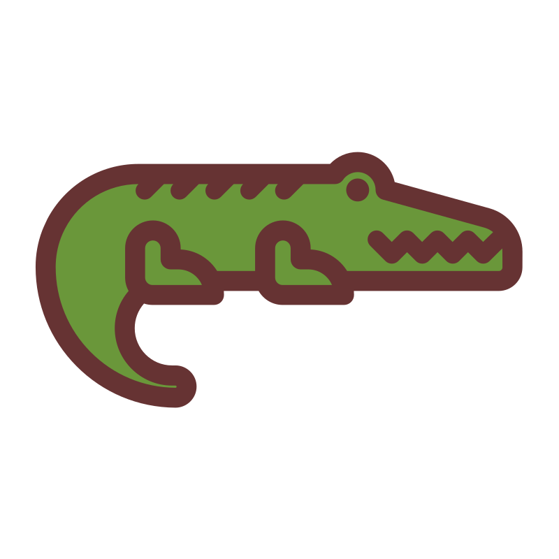
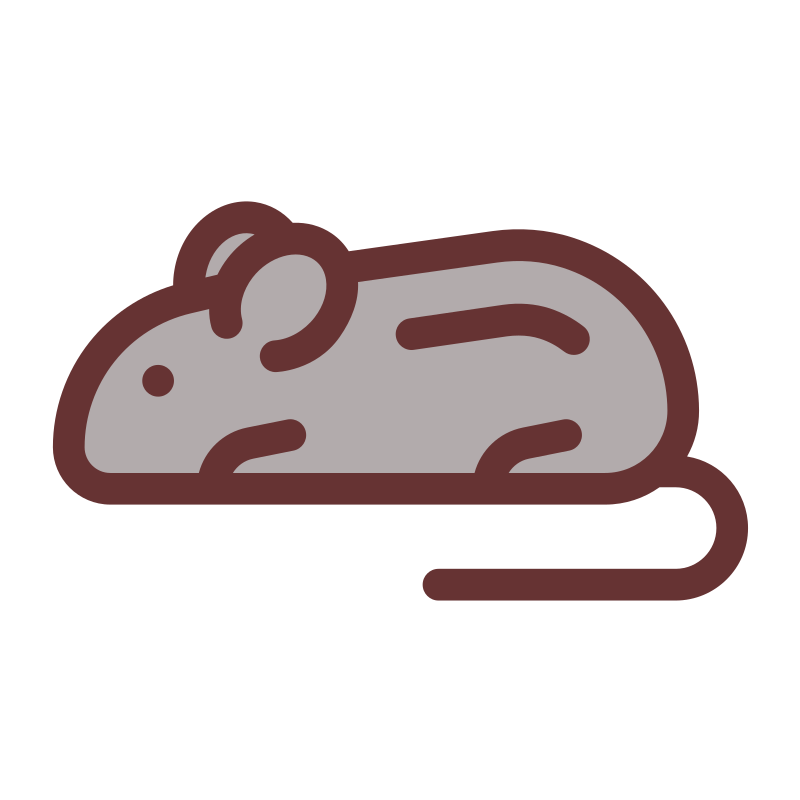

- Alpaca
- Anteater
-
 Bat
Bat
- Beetle
-
 Butterfly
Butterfly
- Camel
-
 Cat
Cat
- Chameleon
- Cobra
- Cow
- Crab
-  Crocodile
-
 Dog
Dog
-
 Duck
Duck
- Elephant
- Elk
-
 Fish
Fish
- Frog
-
 Giraffe
Giraffe
- Hippo
-
 Husky
Husky
- Kangaroo
- Lion
- Macaw
- Manatee
- Monkey
-  Mouse
- Octopus
- Ostrich
-
 Owl
Owl
- Panda
- Pelican
- Penguin
- Pig
-
 Rabbit
Rabbit
- Raccoon
- Ray
- Rhino
- Rooster
-
 Shark
Shark
- Sheep
-
 Sloth
Sloth
- Snake
- Spider
- Squirrel
- Swan
- Tiger
- Toucan
-
 Turtle
Turtle
- Whale